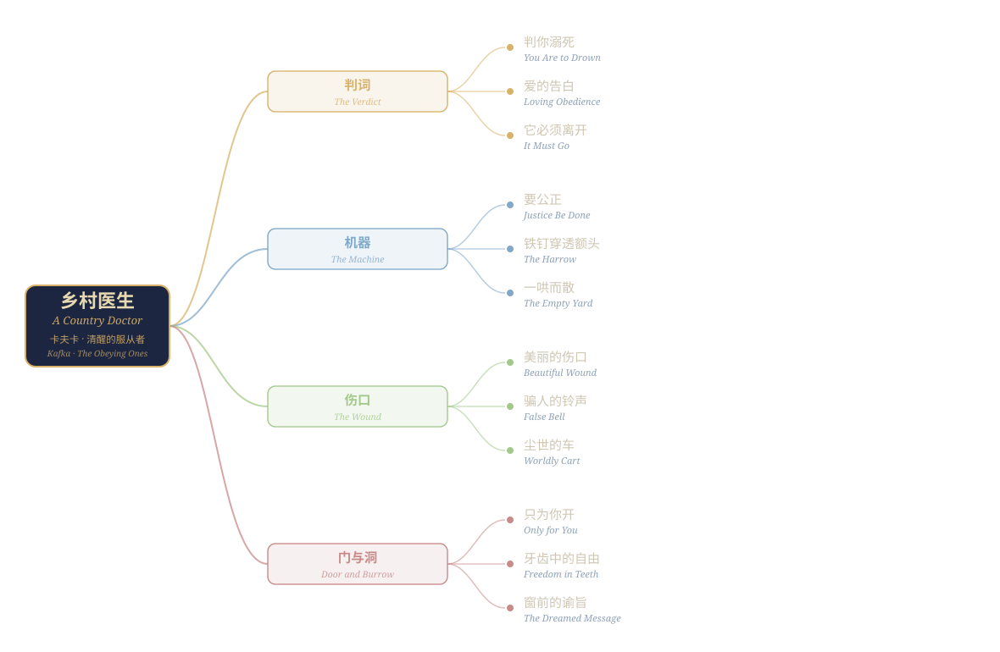

乡村医生
〇 · 书籍信息
基本信息
| 书名 | 《乡村医生》——人民文学出版社「蜂鸟文丛」版，据菲舍尔出版社《卡夫卡全集》校勘本译出，收十二篇短篇 |
|---|---|
| 作者 | 弗朗茨·卡夫卡（1883–1924），布拉格保险局职员、夜半写作的白日梦者——1924 年 6 月 3 日病逝于基尔林疗养院 |
| 译者 | 叶廷芳、王炳钧、韩瑞祥、杨劲、谢莹莹、任卫东、薛思亮——中国德语文学界卡夫卡译介的主力阵容 |
| 体裁 | 短篇小说集——十二篇并置：判决、变形记、在流放地、乡村医生、在法的门前、饥饿艺术家、女歌手约瑟芬或耗子民族、布鲁姆费尔德、中国长城建造时、一只杂交动物、一条狗的研究、地洞 |
| 一句话 | 判词一出身体自动执行、机器带着信念自毁、门只为你开却一生不敢进——卡夫卡把「服从」写到了极限 |
一 · 核心主题总览
十二篇短篇之下，是四组互相咬合的母题：① 判决与服从（权力的内化）
《判决》里父亲吼出「我现在就判你溺死！」，儿子真的落了水，最后一句还是「亲爱的双亲，我一直都是爱你们的」——审判不需要法庭，父亲的身份就是法律；可怕的不是判，在自动执行。
② 异化与驱逐（功能人的命运）
《变形记》开头与结尾互相锁死：醒来变成「硕大的虫子」的第一反应是误不了五点的火车；妹妹说出「它必须离开」——从「哥哥／儿子」降格为「它」，只需要一场失业。
③ 机器与信念（仪式吃掉祭司）
《在流放地》的杀人机器把「要公正！」刺进犯人后背，故障后军官亲自上机殉道——信念可以让一个人把毁灭体验成升华：机器的检验标准不是牺牲时的表情，是它实际救过谁。
④ 门、笼与洞（普通人的三道墙）
《在法的门前》的门只为他开而他跪了一生；《饥饿艺术家》的笼子里自由「藏在牙齿中某个地方」；《地洞》的主人夜夜为不存在的入侵者加固工事——窗前的梦与洞里的耳朵，是同一个不安的两副表情。
二 · 第一段 判决 · 变形记—— 溺死 · 虫壳 · 它必须离开 ——
判决：父亲的权力
格奥尔格向年迈父亲坦白婚讯与生意，父亲突然翻身而起，仿佛拖着牢狱的全部重量，最后吼出：「我现在就判你溺死！」——判词发出，儿子真的奔向河水，落了下去。更惊人的是被告的服从：判词一出，身体自动执行——权力早已内化。
◆ 语言学习 · 权力 · 内化
| 判你溺死 | 家庭内的死刑判决——没有法庭、没有辩护、没有上诉：身份即法律 |
|---|---|
| 自动执行 | 服从的极限形态——挣脱像背叛：被处决者连死都要做得让父亲满意 |
一句温柔的告别
被处决的格奥尔格冲下楼、奔向河桥，「透过栏杆间的空隙，看准了一辆公共汽车」，轻声说：「亲爱的双亲，我一直都是爱你们的。」松开手落了下去。判词与告白同页出现：卡夫卡把服从写到了极限——连死都要征求爱的批准。
◆ 语言学习 · 情感 · 枷锁
| 看准公共汽车 | 落水前的算术——噪音要掩盖落水声：死也做得周到，是全书最冷的一笔 |
|---|---|
| 一直都是爱你们 | 服从者的告白——真正的爱不需要被告自动落水：区分爱与执行是成年礼 |
变形记：醒来的第一天
「一天清晨，格雷戈尔·萨姆沙从一串不安的梦中醒来时，发现自己在床上变成一只硕大的虫子。」而格里高尔的第一反应不是惊呼，是担心误了五点的火车。卡夫卡从不解释「为什么变成虫」：变形只是把一个已经存在的处境翻出来让人看见——虫壳之下，是一个早已不被当作人的劳动者。
◆ 语言学习 · 异化 · 计时
| 五点的火车 | 异变与生计同框——惊叫省掉了，误车不能省：功能人连惊吓都要排队 |
|---|---|
| 硕大的虫子 | 不具名的物种——卡夫卡禁止封面画虫：每个人心里变的是自己的那种 |
三 · 第二段 驱逐 · 机器—— 它必须离开 · 要公正 · 铁钉 ——
变形记：家人的判决
苹果嵌进背部溃烂三月之后，妹妹葛蕾特——他曾倾力供养、最疼爱的人——说出最终判决：「它必须离开。」当晚格里高尔怀着温情与爱意回忆家人，凌晨悄然死去。从「哥哥」降格为「它」，只需要一场失业：供养关系断裂之日，就是称呼改写之时。
◆ 语言学习 · 家庭 · 语法
| 它 | 称呼的降格——一场语法上的全家合谋：判决执行人都不用另派 |
|---|---|
| 苹果 | 父权的投掷物——嵌进背里三月不愈：伤害的残留物比伤害本身活得更久 |
在流放地：判决文
杀人机器用钢针在犯人背上刺刻判决文，服刑十二小时后处决；军官向旅行者展示哈特大法官手书的判决文，逐字拼读：「上面写着‘要公正！’」——「要公正」被刻在皮肤上，是卡夫卡对一切「以正义之名行暴」的终极反讽：机器越精密，正义离现场越远。
◆ 语言学习 · 正义 · 反讽
| 床／绘制仪／耙 | 机器三件套——躺下、绘图、刻字：正义被装配成流水线 |
|---|---|
| 要公正 | 刻在肉上的两行字——正义的成色不看机器多新，看它对待具体的人的方式 |
在流放地：祭司上机
机器年久失修、审判官被裁撤后，军官撕毁封条把自己绑上机器殉道——机器却异常乱刺，「所有其他人从机器中获得的解脱，军官没有得到……一根大铁钉穿透了他的额头」；随后众人一哄而散。「目光安详，充满信念」与「铁钉穿透额头」并置：信念可以让一个人把毁灭体验成升华——把「为信念牺牲」演得越庄严的人，越可能是在替一台废机器陪葬。
◆ 语言学习 · 信念 · 自毁
| 目光安详 | 殉道的表情——信念的检验标准不是牺牲时的表情，是机器实际救过谁 |
|---|---|
| 一哄而散 | 仪式的真相——观众散场后没有一个人留下来陪机器 |
四 · 第三段 医生 · 铃声—— 美丽的伤口 · 尘世的车 ——
乡村医生：美丽的伤口
深夜出诊的医生被凭空出现的马拖到病床前，少年病人恳求：「大夫，让我死吧。」医生随后在右侧臀部发现掌心大的伤口，里面蠕着虫子；少年平静地说：「我带着一个美丽的伤口来到世上；这就是我的全部装备。」承认伤口、带着它行走，比假装健康更接近真话——「全部装备」四个字，宣告了人从出生起就背着的东西。
◆ 语言学习 · 存在 · 装备
| 美丽的伤口 | 出厂配置——每个人的装备清单上都有一道：假装健康是第二次受伤 |
|---|---|
| 大夫，让我死吧 | 病人的请求——求助与求死同声：真话常常以两副面孔同时到达 |
乡村医生：上当了
医生被裸体抬上病床又挣脱，飞身逃回马车——却回不了家：「驾着尘世的车，非尘世的马，我赤身裸体，遭受着这最不幸时代的冰雪肆虐，我这老头子四处飘荡。」结尾双叹：「上当了！上当了！一次听信了深夜骗人的铃声——就永远无法挽回。」「尘世的车、非尘世的马」：出诊是尘世的责任，马与铃却是另一套秩序的召唤——响应职责写成了一出无法退场的循环剧。
◆ 语言学习 · 职业 · 循环
| 非尘世的马 | 另一套秩序的坐骑——响应它就回不了家：职责与欲望共用同一辆车 |
|---|---|
| 骗人的铃声 | 信息过载的祖师爷——永远无法挽回的不是响应，是不设防的那一次 |
在法的门前：只为你开
乡下人跪守法之门前一生，临死问守门人：「除我之外，怎么就不见一个人来要求踏进法的大门呢？」守门人在他耳边吼出答案：「这儿除了你，谁都不许进去，因为这道门只是为你开的。我现在要去关上它了。」门为他而设，他却一生不敢进：真正的守门人长在他心里——先推一下试试，守门人的吼声都比后悔好听。
◆ 语言学习 · 制度 · 门前
| 法的大门 | 许可的象征——学位、资历、时机：你确信「得先获准才能开始」的东西 |
|---|---|
| 只为你开 | 最残酷的资源——通道一生有效，等来的却是报废 |
五 · 第四段 门 · 笼 · 窗 · 洞—— 牙齿中的自由 · 谕旨 · 地洞 ——
饥饿艺术家：真相
绝食表演家被时代抛弃，委屈进了马戏团草料堆旁的笼子；临终被管事问起，他留下最平静的答案：「因为我找不到适合自己口味的食物。」真相拆穿了一生的光环：世人赞叹的毅力与献身，只是「找不到匹配之物」的副产品——你绝食到底是因为高洁，还是因为没找到对的？两种人生，别互相冒充。
◆ 语言学习 · 志向 · 诊断
| 绝食表演 | 不妥协的公开化——把「吃不下」做成职业：时代先是捧它，后是忘了它 |
|---|---|
| 四十天 | 观众的耐心上限——监管条款规定四天后必须中断进食：连殉道都有排班表 |
饥饿艺术家：豹的自由
艺术家死后，笼子换上一只年轻黑豹：「它似乎都没有因失去自由而惆怅」「它的自由好像就藏在牙齿中某个地方。」观众立刻涌向豹子，「舍不得离去」。同一只笼子，两种自由观：自由不是一个位置（不在笼外），是一种装备（长在身体里）——把自由随身带着的人，笼子只是食堂。
◆ 语言学习 · 自由 · 装备
| 牙齿中的自由 | 能力化的自由——与其筹划脱笼，不如长出「在哪儿都吃得下」的能力 |
|---|---|
| 舍不得离去 | 观众的投票——时代不需要殉道者的仪式，需要活生生的力量 |
谕旨与地洞
《中国长城建造时》讲皇帝临终降下一道谕旨，使者力竭数千年也挤不出层层宫阙，寓言收在普通人身上：「可是，每当傍晚降临的时候，你却坐在你的窗前，梦想着这个谕旨。」《地洞》以第一句自白开场：「我造好了一个地洞，似乎还蛮不错。」——挖洞者夜夜听见洞外若有若无的「曲曲声」，为不存在的入侵者加固工事。等一纸批文与加固一切焦虑——不如各退半步：谕旨不来也照常吃饭，地洞已够就不再加高。
◆ 语言学习 · 普通人 · 两态
| 谕旨 | 等待被拯救的期待——使者永远挤不出宫阙：把人生押在被通知上 |
|---|---|
| 曲曲声 | 焦虑的声学——听不见却一直在加固：防御的上限由恐惧决定 |
六 · 人物图鉴与成长弧线—— 主角配角 · 一张表看穿 ——
主要人物
格奥尔格——《判决》中的儿子——被父亲一语处决，落水前还说爱他们
格雷戈尔·萨姆沙——《变形记》主角——推销员、养家人、虫子：一个功能人的完整档案
乡村医生——同名篇主角——裸体出诊的空手救助者：被尘世的铃与非尘世的马夹在中间
次要人物（功能位）
| 军官 | 《在流放地》的机器祭司——亲手上机殉道：信念的标本 |
|---|---|
| 守门人 | 《在法的门前》的哨兵——吼出「只为你开」的真相 |
| 饥饿艺术家 | 绝食者——临终坦白找不到适合口味的食物 |
| 葛蕾特 | 格里高尔的妹妹——从被供养者到驱逐令的宣读人 |
| 挖洞者 | 《地洞》 narrator——「我造好了一个地洞」的自白者 |
七 · 主题与象征—— 每个道具都在说话 ——
| 判词 | 不需要法庭的审判——身份即法律 |
|---|---|
| 苹果 | 嵌进背里的伤害——残留物比伤害活得更久 |
| 杀人机器 | 精密的正义——刺在皮肤上的「要公正」 |
| 铃 | 深夜的召唤——响应过一次就回不了家 |
| 笼子 | 同一个牢笼的两种租客——艺术家与豹 |
| 地洞 | 焦虑的建筑学——防御的上限由恐惧决定 |
八 · 写作手法赏析—— 怎么写，就能怎么学 ——
① 平静的荒诞
人物对超常境遇不惊不呼——惊叫省掉了，误车不能省：荒诞由日常动作背书。
② 不解释设定
为什么变虫、为什么判死、门里有什么——卡夫卡从不给答案：空白即深渊。
③ 结尾的双叹
「上当了！上当了！」——顿悟以懊悔的形态出现：卡夫卡的觉醒永远迟到。
④ 笼与洞的对仗
绝食者的笼与挖洞者的洞——防御与展示互为镜像：弱者的两种建筑。
九 · 名段欣赏—— 原文精读 · 逐段赏析 ——
十 · 金句摘录—— 12 条 · 中英对照 · 带出处 ——
"我现在就判你溺死！"—— 《判决》
"亲爱的双亲，我一直都是爱你们的。"—— 《判决》 · 结尾
"一天清晨，格雷戈尔·萨姆沙从一串不安的梦中醒来时，发现自己在床上变成一只硕大的虫子。"—— 《变形记》 · 开头
"它必须离开，"—— 《变形记》 · 葛蕾特
"要公正！"—— 《在流放地》
"我带着一个美丽的伤口来到世上；这就是我的全部装备。"—— 《乡村医生》
"驾着尘世的车，非尘世的马，我赤身裸体"—— 《乡村医生》 · 结尾
"一次听信了深夜骗人的铃声——就永远无法挽回。"—— 《乡村医生》 · 结尾
"这道门只是为你开的。我现在要去关上它了。"—— 《在法的门前》
"因为我找不到适合自己口味的食物。"—— 《饥饿艺术家》
"它的自由好像就藏在牙齿中某个地方。"—— 《饥饿艺术家》 · 结尾
"可是，每当傍晚降临的时候，你却坐在你的窗前，梦想着这个谕旨。"—— 《中国长城建造时》 · 结尾
十一 · 拓展阅读—— 原文 · 词条 · 译文 ——
原文与文本
- Franz Kafka — Wikipedia —— 布拉格保险局职员、夜半写作与 1924 年基尔林的结局
- A Country Doctor (collection) — Wikipedia —— 1919 年原版目录与本册十二篇的对应关系
主题与延伸
- The Metamorphosis — Wikipedia —— 1915 年发表始末与各种阐释路径
- Before the Law — Wikipedia —— 「法的门前」寓言出自《审判》第七章的完整语境
十二 · 个人感悟与心得—— 三点心得 ——
判词 · 笼子 · 地洞
① 判决不可怕，自动执行才可怕
「我现在就判你溺死！」与「我一直都是爱你们的」同页——有多少人一生都在自动执行某句早年判决？识别那句判词的来源，是解开封印的第一步。
② 先推一下那扇门
「这道门只是为你开的」——门为他而设，他一生不敢进：那个你确信「得先获准才能开始」的东西，也许只欠一推：守门人的吼声都比后悔好听。
③ 自由不长在位置上，长在能力里
豹的自由「藏在牙齿中某个地方」——与其筹划脱离笼子的计划，不如长出那种「在哪儿都吃得下」的能力：把自由随身带着的人，笼子只是食堂。
—— 卡夫卡死于 1924 年 6 月 3 日，基尔林疗养院，时年四十岁。临终前他要求布罗德焚毁全部手稿；布罗德没有照办——于是我们今天才读到这些「美丽的伤口」。
十三 · 一页速查（复习用）
| 全书骨架 | 十二篇：判决→变形记→在流放地→乡村医生→在法的门前→饥饿艺术家→女歌手约瑟芬→布鲁姆费尔德→中国长城→杂交动物→一条狗的研究→地洞 |
|---|---|
| 核心命题 | 判决与服从；异化与驱逐；机器与信念；门、笼与洞 |
| 必读篇目 | 判决→变形记→乡村医生→在法的门前→饥饿艺术家→地洞（六篇骨架） |
| 三大符号 | 判词（身份即法律）· 笼子（两种租客）· 地洞（焦虑的建筑学） |
| 一句话总结 | 卡夫卡一生都在写清醒的服从者——他从不写反抗，只写服从者心里那一点点没有熄灭的余温 |
十四 · 全书思维导图—— 一图纵览 ——

一图纵览全书骨架 · 中英双语对照 · 手机端可左右滑动查看全图